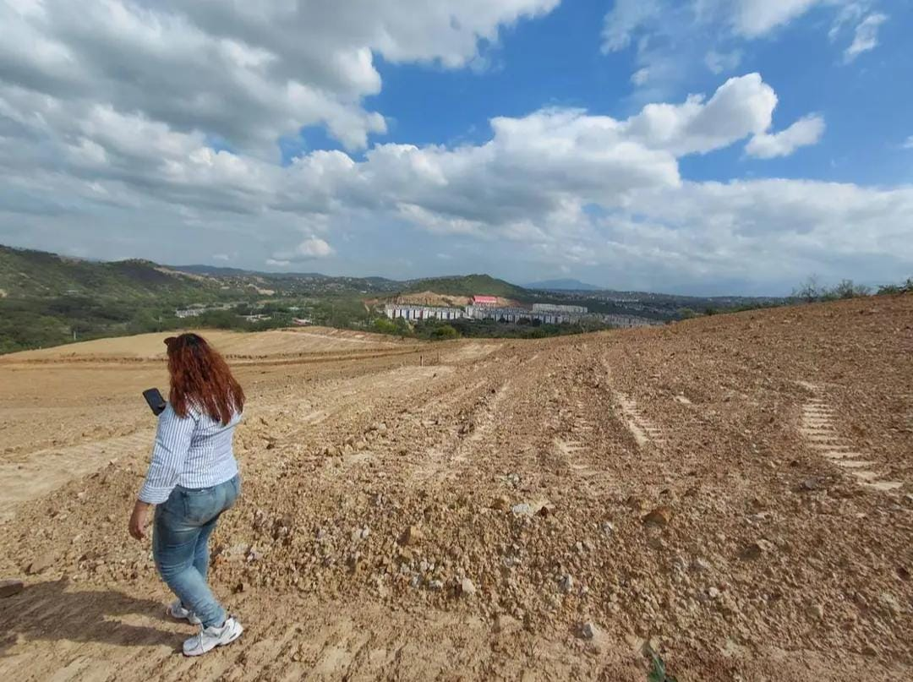

Lote · San IsidroLote medianero en San Isidro
⌖ San Isidro, Cúcuta, Norte de Santander
$20.000.000 COP
Lote de 6 m de frente por 10 m de fondo, ubicado cerca de Torres de los Arrayanes, megacolegio y supermercado Ara.
▱ 60 m² de lote↔ 6 × 10 m◷ 36 cuotas
Facilidades de pagoInicial: $2.000.00036 cuotas aproximadas de $500.000